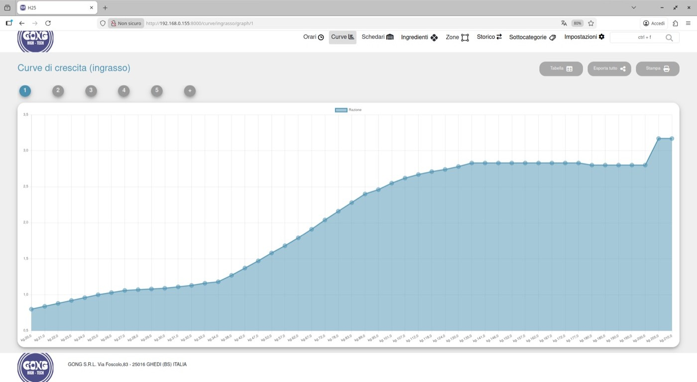

Back-end Developer | Sep 2022 - Aug 2025
Gong TECNOLOGY S.R.L. / GONG High-Tech S.r.l.
Development of a management system for liquid feed administration in livestock farms (Django/Python). MySQL DB design, unit testing, CI/CD with GitHub Actions and technical documentation writing.
Product walkthrough
A selection of screens from the management system developed for livestock farm operations.

Context
Back-end development focused on a management system for the livestock sector.
Contribution
Implementation of Django and Python features, MySQL database design, automated testing, CI/CD and technical documentation.
Highlights
Participation in the development of a system for managing liquid feed administration in livestock farms.